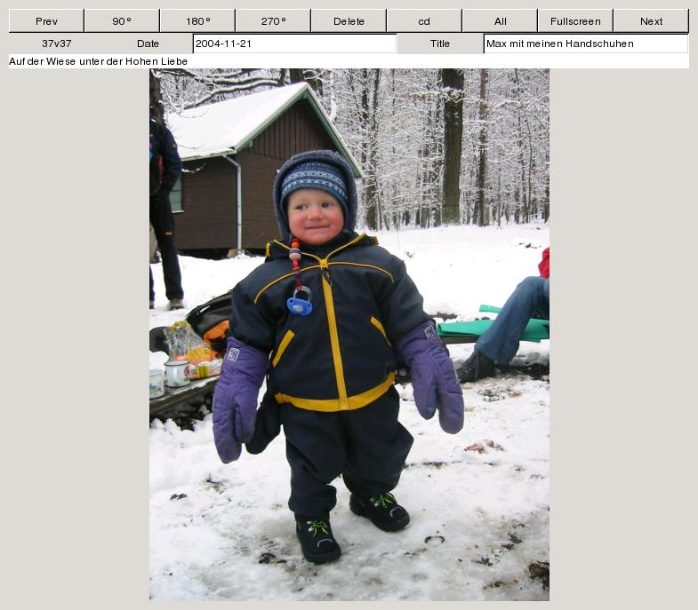
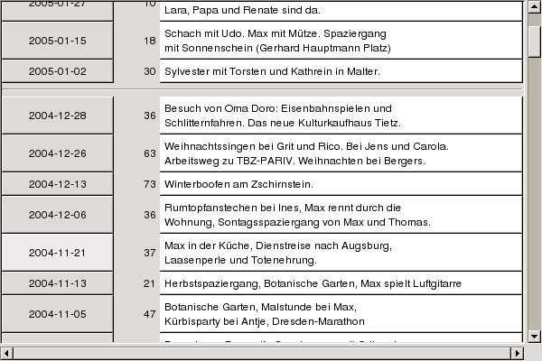

Gthumpy: Images and Metadata
Introduction
About Gthumpy
Gthumpy is small collection of scripts for handling images from a
digital camera. One script lets you enter metadata and view picture
(date, description, title) in a GUI and an other creates static HTML
files and thumbnails.
The created HTML files don't need a http server or CGI, you can burn
a CD/DVD and give this to your friends. You only need a webbrowser to
view the created HTML files.
Supported platforms
Gthumpy gets developed on Linux, but should be portable to win32. The
HTML files created with "make-my-pictures.py" can be viewed on any
platform with a webbrowser.
How to use it
Step 1:
Create a directory with all images which belong to one group.
If you use the current date like in the example, the directories
are always sorted in chronological order.
Example:
> cd image-dir
> mkdir 2004-12-31 # or mkdir `date --iso`
> cd $_
> gphoto2 --get-all-files
If your camera is supported by gphoto, you can use the "get" button to this step.
Step 2:
Then have a look at the pictures, rotate, delete and give description
with "editMetadata.py". This is a pygtk GUI:
> python editMetadata.py image-dir/2004-04-14
You can create a "gthumpy.conf" in "~/.config/gthumpy/gthumpy.conf" or in the
source directory. You can set the lanuage and the
image-directory. Look at the default config file.
> python make-my-pictures.py
This scripts creates thumbnails with convert of ImageMagick and HTML
pages. This script behaves like the unix tool "make". If a picture
gets changed, the thumbnails get created again.
What directory layout should I use?
I use a directory for each day I download the images from the camera
to the computer.
image-dir/2006-01-03/IMG1.jpg
image-dir/2006-01-03/IMG2.jpg
image-dir/2006-02-14/IMG3.jpg
image-dir/2006-02-14/IMG4.jpg
At the moment I have 3553 pictures in 111 directories.
editMetadata.py
This script is a GUI written with pygtk.

The metadata (date, title, description) are saved in a file per image
(IMAGE.gthumpy)
You can display all pictures of a directory (incl. metadata):

You can change the directory and give each directory a description:

Keyboard Shortcuts for editMetadata
- PageUp/PageDown: Previous/Next Image
- Ctrl-p/Ctrl-n: Previous/Next Image
- ESC: Change between fullscreen and normal mode
- Pos1/End (in fullscreen mode): First/Last Image of current directory
- Ctrl-x: Delete current image
- Ctrl-r: Rotate 90 degrees (turn right)
- Ctrl-l: Rotate 270 degrees (turn left)
- Ctrl-u: Rotate 180 degrees (upside down)
make-my-pictures
About
This script creates static HTML files from the metadata. There is a
page which lists all directories, a page which lists all pictures of
a directory and a page for each image.
Which files get created?
Taken the example layout from above, this files will be created:
image-dir/index.html # Table with descriptions of all directories
# Created by make-my-pictures.py
image-dir/2006-01-03/index.html # Preview with thumbnails.
# Lists all images of the directory.
# Created by make-my-pictures.py
image-dir/2006-01-03/IMG1_res150.jpg # Thumbnails
image-dir/2006-01-03/IMG1_res500.jpg # Created by make-my-pictures.py
image-dir/2006-01-03/IMG1_res1024.jpg
image-dir/2006-01-03/IMG1.html # HTML-Page for one image
# created by make-my-pictures.py
image-dir/2006-01-03/IMG1.gthumpy # XML file created by editMetadata.py
JavaScript
There is one simple JavaScript method. It marks the text where you
link points you (...#FOO in the URL). This is usefull if you have a
lot of pictures in one directory or a lot of directories in you
image-dir.
UnicodeError: UTF-8 decoding error: invalid data
The default encoding for XML is UTF-8. You should use
<?xml version="1.0" encoding="iso-8859-1"?>
as the first line of your foo.gthumpy files if you want to
use german umlauts. Edit "template.gthumpy"
Templates
- template.gthumpy is used by editMetadata for new pictures.
- template_picture.html is used for the slide show
- template_preview.html is used for the overview ot the directory
How do the created HTML files look like?
http://guettli.sf.net/gthumpy/example
Misc
How can you translate it an other language?
At the moment german (de) and english (en) are supported. You need to
create a new file in the language directory "lang" and edit the
templates. Have a look at "de.py".
What libraries/programs does gthumpy use?
What licence is used by gthumpy?
Gthumpy is in the public domain. You can use it under any open source
licence. If you like it, send me an email!
There are already many scripts, which do things like this. Why did you do it again?
- Most scripts for HTML pages need a http server. I want to create
HTML pages as simple static files.
- I like python programming.
Where do I post corrections, typos and feedback?
guettli@thomas-guettler.de
Where can I get it?
http://guettli.sf.net/gthumpy/download